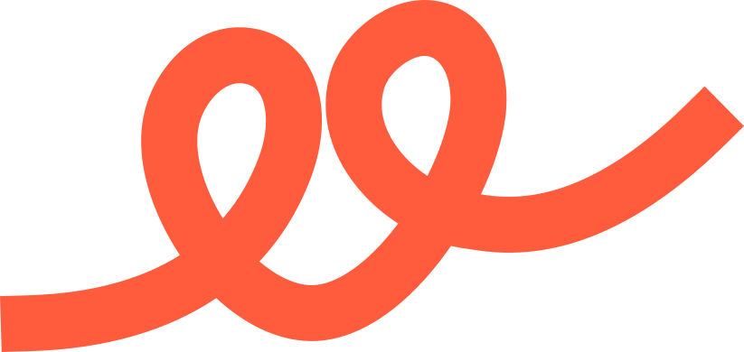
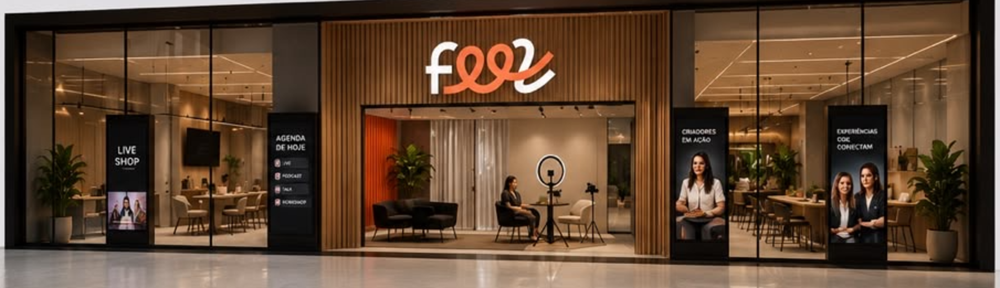
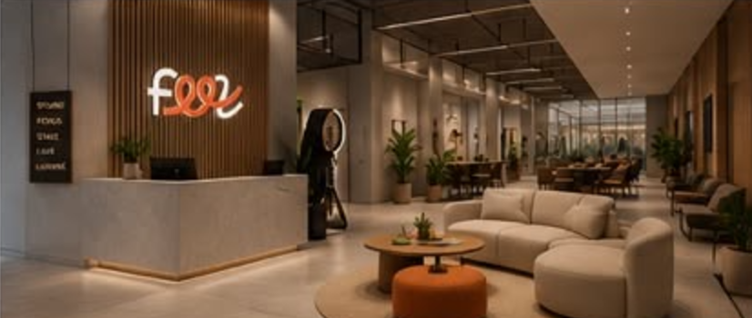
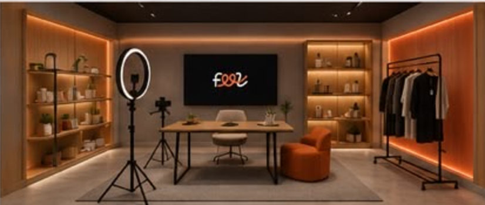
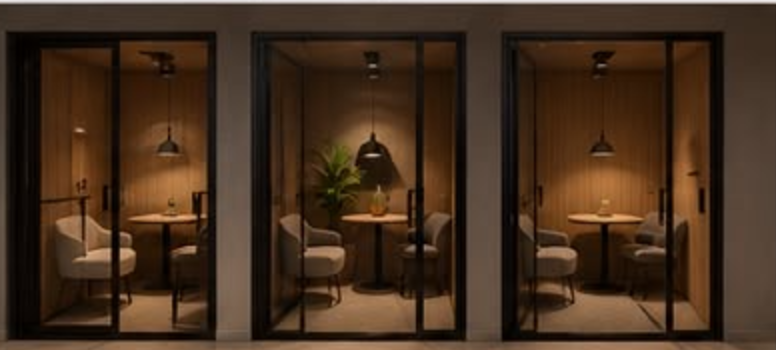
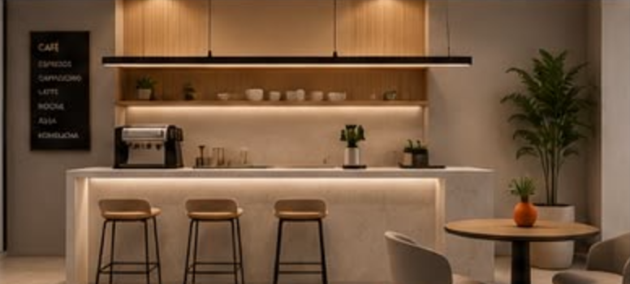
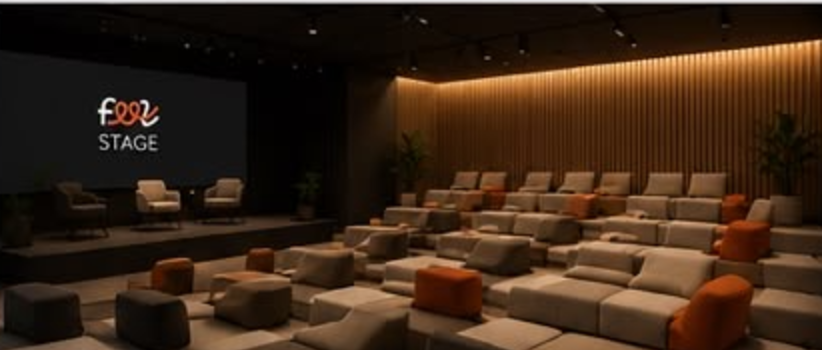

A creator economy não é feita só de creators. É feita da confiança entre quem cria, quem contrata e quem banca. A Feel é a infraestrutura que torna essa confiança visível — e contável.
Existe uma força comercial esperando para ser organizada em torno de milhares de creators pequenos. Marca quer alcance real, o creator quer renda estável, o varejo quer movimento. O que falta não é gente — é a camada que faz os três confiarem uns nos outros antes de fechar.
Entrega, mas não consegue provar o que entregou. A reputação vive em print de tela.
Marca e varejo apostam às cegas. Escolher creator é torcer para dar certo, não decidir com prova.
Quem antecipa recebível olha uma renda opaca. Sem histórico verificável, o risco vira preço.
Currículo de creator é print de engajamento. Nada é verificável, nada é comparável.
Relações dispersas em DM, planilha e indicação. O rastro existe, mas ninguém o acumula.
Assimetria de informação. Sem confiança, tudo fica mais caro: o cachê, a curadoria e o crédito.
Ninguém possui a camada de confiança — então o custo de encontrar, avaliar e confiar recai sobre todos os lados, o tempo inteiro.
Reputação não é currículo nem score. É um rastro — cada obra, cada venda, cada entrega deixa uma marca. A Feel transforma esse rastro em prova contável: um histórico que a próxima marca vê antes de fechar, e que quem banca vê antes de antecipar.
Infraestrutura de reputação verificável para a economia criativa.
"Plataforma de creator" compete com o TikTok. "Marketplace" compete com o Fiverr.
Uma categoria nova não compete com ninguém.
O creator entrega: uma campanha, uma live, uma venda.
A entrega deixa dado na fonte — não é auto-declarada.
Quem contratou co-assina. A prova passa a ter dono dos dois lados.
Cachê melhor, curadoria melhor — e crédito com taxa mais justa.
A confiança precisa de um lugar para viver e de um lugar para acontecer. A Feel é o grupo; a rede dá o lastro; o espaço dá a partida.
A marca-mãe e a tese: infraestrutura de confiança da economia criativa. Tudo que segue nasce daqui.
O lastro digital: perfil verificável, prova co-assinada e dados na fonte. Onde a reputação se acumula.
O catalisador: um endereço no shopping que gera densidade local e o palco onde a rede vira encontro.

O ponto onde a rede sai da tela e vira encontro.
Cerca de 200 m² modulares dentro do shopping, desenhados para gerar conteúdo, conectar pessoas e transformar atenção em venda. Cada ambiente tem uma função — todos conectados para gerar prova.





Distribuição, gestão e uma base de creators já organizada como operação. Move volume — traz a demanda de marca e o alcance real.
Antecipação de recebíveis para creators, mais a camada de educação financeira. Dá liquidez a quem entrega hoje e recebe depois.

A camada de confiança. Cada entrega vira prova contável — a reputação que qualifica o creator para a marca e para o crédito.
Antecipar recebível de creator é caro porque a renda é opaca. O lastro da Feel é o sinal que faltava: histórico verificável reduz o risco da Yolo. Quem tem prova, antecipa melhor.
A Drive resolve o que ele vende; a Feel resolve quem ele é. Distribuição de um lado, diferenciação do outro.
A Drive traz volume e demanda de marca. A Feel traz relação e curadoria pelo lastro — alcance somado a reputação.
FeelMakers é a ativação física: encontro, conteúdo e venda no mesmo lugar. Palco natural para a base da Drive — e para a educação financeira da Yolo.
O histórico de campanhas e recebíveis da Drive/Yolo abastece as provas do perfil Feel. O creator não digita nada — o lastro se preenche sozinho a cada entrega.
O lastro Feel entra na régua de risco da Yolo. Um creator com histórico verificável antecipa com condição melhor — a confiança da Feel vira taxa mais justa.
FeelMakers com a base de creators da Drive e a educação financeira da Yolo. Um encontro físico que gera conteúdo, venda, prova e relação com dinheiro ao mesmo tempo.
Este é o conceito — o mesmo que você pediu para levar ao seu sócio. Antes de qualquer número, três perguntas que orientariam uma segunda conversa.
Onde está o maior gargalo da base de creators da Drive hoje: atrair, reter, ou diferenciar quem já entrega?
O que a Yolo já mede de renda do creator que poderia virar — ou ganhar com — uma prova de reputação?
Faz sentido explorar um piloto com um recorte pequeno — uma praça, um grupo de creators — para ver o lastro em campo?